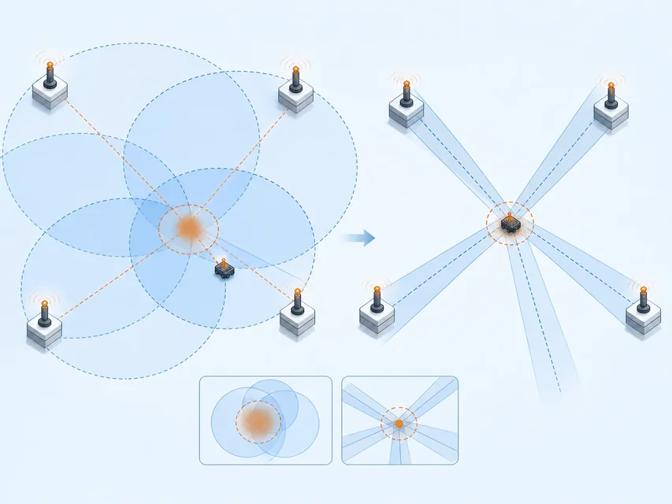
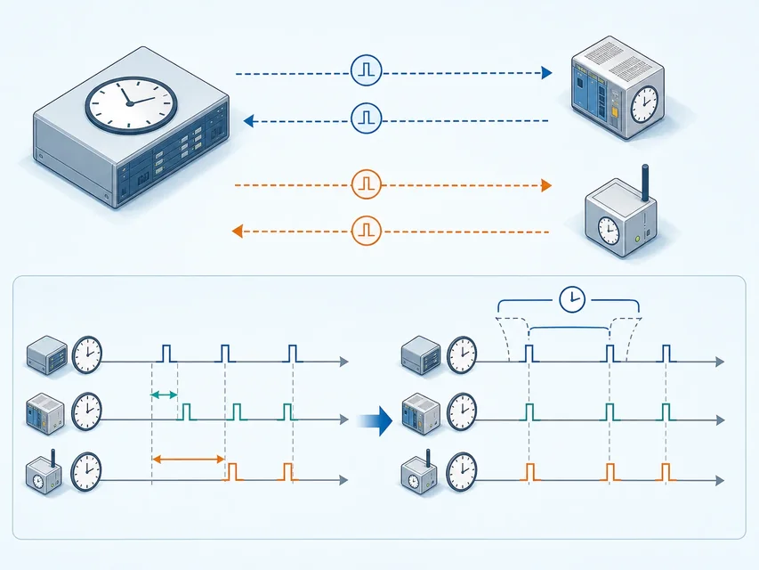

对象／事件
设备、车辆、人员或某次事件
判断设备何时在哪里，结果能否使用
 VER. 2608
Built with impress.js
VER. 2608
Built with impress.js
为仓库 AGV 选择定位与同步方法，判断结果能否用于调度
定位确定位置，授时传递时间基准，使设备时钟可比较
已知自动导引车 AGV 的编号 agv-01：求当前位置
已知区域与时刻：现在有哪些 AGV 在入库区？
同一设备的坐标与事件记录，都要带对象和时间
设备、车辆、人员或某次事件
绝对坐标；楼层、货架等相对位置
绝对时间基准，或相对启动、采样和另一事件的时刻
正问题求对象的位置或时间；反问题按时空条件查询对象或触发事件
例如已知 agv-01，求当前坐标
导航更新车辆位置、记录设备采样时刻、判断事件发生地点
例如查 10:00 入库区内的车辆
查找某时刻某区域的车辆，或在给定时刻让设备执行动作
坐标或货架位置、事件时刻或时长
导航、仓储等任务的精度要求不同
局部关联设备可以同步，不一定都要对齐全球时间
根据已知量与待求量判断问题方向
| 已知条件与任务 | 待求量 | 问题方向 |
|---|---|---|
| 已知货物 H023，查当前所在货位 | 填写 | 填写 |
| 已知 A 区与 10:00，查当时有哪些货物 | 填写 | 填写 |
| 指定 A 区阀门在 10:05 关闭 | 填写 | 填写 |
两探测点相距 30 米，检测的是同一车辆，两端时钟已同步
| 通过第一点 | 通过第二点 |
|---|---|
| 10:00:02 | 10:00:05 |
经过时长为两个时刻之差，平均速度为路程除以时长
第二个时钟快 2 秒会怎样影响结果？
本题由事件时刻计算时长与速度，未按给定时空查询对象或触发事件
锚节点 Anchor 的位置已知，目标对象的位置待求解
左：距离／距离差 → 约束 → 位置
右：到达角 AoA → 约束 → 位置
测量方式可分别选择；锚点分布、同步与测量误差影响定位结果

测量方法决定所需的同步条件、设备和路径假设
| 方法 | 测量与条件 | 输出 |
|---|---|---|
| 到达时间 TOA | 单程传播时间；收发端共享足够准确的时间基准 | 传播时间 × 波速得到目标到锚点的距离 |
| 往返时间 RTT | 往返传播时间与处理延迟；路径近似对称 | 换算目标到锚点的距离，可减弱两端未同步影响 |
| 到达时间差 TDoA | 多个同步锚点比较到达时刻 | 目标到锚点的距离差 |
| 到达角 AoA | 多天线比较到达差异 | 目标相对接收端的方向 |
本题在二维平面测真实距离，不额外引入未知时钟偏差
三个锚点为 (0,0)、(6,0)、(0,8) 米；测距均 5 米，求 AGV 坐标 (x,y)
两次相减得到 \(x=3,\ y=4\)；锚点重合或测距误差会影响结果可靠性
特征定位将观测特征与环境地图匹配，估计位置
离线：已知位置采集特征 → 建立环境—位置地图／模型
在线：在待定位处采集特征 → 与地图匹配／预测位置
Wi-Fi 或 RFID 信号特征，以及地磁、图像、气压等与位置相关的信号或物理量
在已知位置采样并保存特征向量与坐标
匹配最相似记录，或用监督学习（如 K 近邻 KNN）预测坐标
环境或设备变化、采样不全可能使地图失效；重建有成本
地图变化或运动误差会让位置偏离；两种方法可组合校正
把采集到的信号、地磁、图像或气压与地图中的记录匹配
建图后随环境变化更新指纹
用已知起点、步数、距离、方向及加速度计、罗盘、陀螺仪读数递推位置
无需持续外部信号，误差沿路径累积
候选方案需验证定位误差与维护条件
| 现场已有条件与目标 | 候选方案 | 还需验证 |
|---|---|---|
| 仓库已有 Wi-Fi，只需区分货架区，可安排采样建图 | 填写 | 填写 |
| AGV 已有测距锚点，目标误差不超过 0.5 米 | 填写 | 填写 |
| 地下步行已有起点与运动读数，短时推算后可扫码校正 | 填写 | 填写 |
替代方案须有现有数据、部署工作与误差验证支持
晶体振荡器（晶振）的频率会漂移；网络延迟会影响时间戳比较
晶振的实际频率与标称值存在差异
温度、供电和工作状态变化，可能让时钟走快或走慢
传播、排队、射频处理和中断响应都会增加延迟，影响用时间戳比较两端时钟
独立时钟 → 漂移或传输延迟 → 时间戳难比较 → 同步与误差评估
晶振持续漂移，休眠或断网可能失步；设备须定期重同步并记录剩余误差
选择同步方式要看误差后果和链路条件
发送端传时间戳，接收端校准；传播、排队和处理延迟难完全分离。参考广播可减弱发送端处理延迟，仍受传播与接收影响
按 A 发、B 收、B 发、A 收记录四时刻；在往返近似对称时估计时钟偏差与链路延迟
重复测量可减小随机波动，路径不对称仍会造成偏差

时间戳按 A 发、B 收、B 发、A 收记录；数值同时受事件时刻与时钟偏差影响
| A 的时钟（毫秒） | B 的时钟（毫秒） |
|---|---|
| 发送 \(T_1=1000\) | 接收 \(T_2=1018\) |
| 接收 \(T_4=1010\) | 发送 \(T_3=1020\) |
B 等待 2 毫秒后回复，A 共等待 10 毫秒；跨设备时间戳之差还包含时钟偏差
沿用上一页四时间戳，假设去程与回程时延近似相等
\(\hat\theta\) 是估计 B 比 A 快了多少；\(\hat\delta\) 是扣除 B 处理时间后的网络往返时延
本例估计偏移 14 毫秒，网络往返 8 毫秒；路径不对称时，偏移估计可能失准
固定真实偏移 14 毫秒与处理时间 2 毫秒，改变去回程时延
| 去程 / 回程 | 四时间戳（毫秒） | 请计算偏移与往返 |
|---|---|---|
| 4 / 4 | 1000、1018、1020、1010 | 对照上一页 |
| 6 / 2 | 1000、1020、1022、1010 | 偏移估计是否仍为 14？ |
信号可用性、能耗、部署费用和校正方式共同决定选型
| 系统 | 适合条件 | 主要限制 |
|---|---|---|
| 卫星导航 | 开阔室外，需要定位、授时或测速 | 室内、隧道、水下受遮挡；终端能耗需管理 |
| 蜂窝定位 | 有移动通信覆盖，室内外都可能使用 | 定位精度与可用性依赖通信覆盖和基站部署 |
| 室内定位 | 仓储、商场、医院 | 受多径和遮挡影响；需维护指纹或部署锚点 |
| 网络时间协议 NTP | 能访问层级化时间源 | 要处理延迟、不可信上游和断网 |
可组合卫星、锚点、指纹、运动读数与网络时间；失效时切换备用或暂停调度
室外、室内、地下、海上或动态变化
锚点、指纹、运动读数或可信时钟
能耗、带宽、终端算力、部署和维护
误差对导航、调度、控制、安全和隐私的影响
场景 → 定位与同步依据 → 系统组合
误差验证 → 失效与恢复
计算结果依赖题目给定的维数、时钟与测量假设
核对位置来源、回传和校正方式，判断误差对告警与调度的影响
项圈中的卫星终端持续报告位置，越界规则触发告警
已知锚点坐标，测距求 AGV 位置
已知 AGV 位置时，也可测距定位固定标签
地下或隧道中，用惯性测量单元 IMU 读数与步态推算位置，以外部位置校正漂移
项圈记录告警坐标与时刻，AGV 保留锚点测量，定位鞋记录漂移与校正
调度前核对对象、采样时间、误差与回传完整性；失效时暂停并重新测量
01
02
03
04
05对象标识
→ 定位与授时
→ 回传与存储
→ 调度或告警
→ 误差与权限复核确认目标及标识有效性
注明测量、指纹、运动读数或时间基准的来源及计算假设
明确位置查询者、调度或告警方式与人工复核条件
写明采集范围、可访问角色、保留期限、共享对象和异常处置人
本题要求记录年龄≤1 秒、误差估计≤0.5 米；不满足时暂缓调度
三种独立情形：同一时基，当前 10:00:10；agv-01 均报 (3,4) 米，回传完整，三个可用锚点不共线
| 采样时刻 | 误差估计 | 记录年龄 | 你的判断 |
|---|---|---|---|
| 10:00:09.5 | 0.2 米 | 计算 | 填写 |
| 10:00:07.0 | 0.2 米 | 计算 | 填写 |
| 10:00:09.5 | 0.9 米 | 计算 | 填写 |
过期重采样，误差过大重测；合格后检查路径、障碍物与权限
| 用途 | 最小必要记录 | 保护要求 |
|---|---|---|
| 越界告警 | 填写 | 填写 |
| 仓库调度 | 填写 | 填写 |
| 隧道导航 | 填写 | 填写 |
| 事件审计 | 填写 | 填写 |
以 agv-01 为例，说明定位、同步、失效与恢复